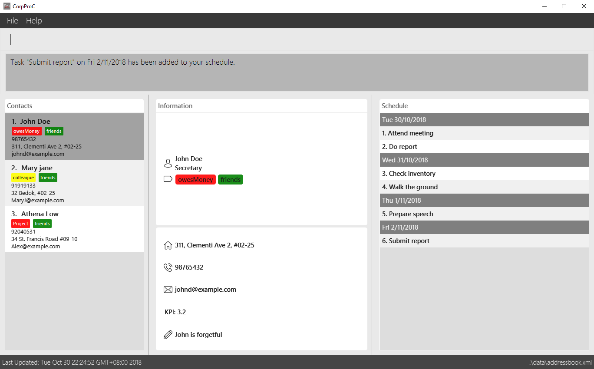

By: CorpProC Since: Aug 2018 Licence: MIT
- 1. Introduction
- 2. Quick Start
- 3. Features
- 3.1. Viewing help :
help - 3.2. Adding a person:
add - 3.3. Listing all persons :
list - 3.4. Editing a person :
edit - 3.5. Finding persons by attribute :
find - 3.6. Deleting a person :
delete - 3.7. Selecting a person :
select - 3.8. Listing entered commands :
history - 3.9. Undoing previous command :
undo - 3.10. Redoing the previously undone command :
redo - 3.11. Backing up all data :
backup - 3.12. Restore data from backup :
restore - 3.13. Exports the address book to a directory :
export - 3.14. Imports the address book from a directory :
import - 3.15. Clearing all entries :
clear - 3.16. Exiting the program :
exit - 3.17. Encrypting data files :
password - 3.18. Email contacts :
mail - 3.19. Schedule
- 3.1. Viewing help :
- 4. Appendix
- 5. FAQ
- 6. Command Summary
1. Introduction
This address book is optimised and made for corporate users. It is able to store essential and critical information of each contact and boasts a friendly user interface for efficiency. Autocompletion and an ability to approximate word search allows for productivity when information is needed fast. It features proper tagging and groupings for better organisation of contacts. It is also able to store confidential information securely and has a backup file to prevent any accidental deletion.
2. Quick Start
-
Ensure you have Java version
9or later installed in your Computer. -
Download the latest
addressbook.jarhere. -
Copy the file to the folder you want to use as the home folder for your Address Book.
-
Double-click the file to start the app. The GUI should appear in a few seconds.
 -
Type the command in the command box and press Enter to execute it.
e.g. typinghelpand pressing Enter will open the help window. -
Some example commands you can try:
-
list: lists all contacts -
addn/John Doe p/98765432 e/johnd@example.com a/John street, block 123, #01-01: adds a contact namedJohn Doeto the Address Book. -
delete3: deletes the 3rd contact shown in the current list -
exit: exits the app
-
-
Refer to Section 3, “Features” for details of each command.
3. Features
Command Format
-
Words in
UPPER_CASEare the parameters to be supplied by the user e.g. inadd n/NAME,NAMEis a parameter which can be used asadd n/John Doe. -
Items in square brackets are optional e.g
n/NAME [t/TAG]can be used asn/John Doe t/friendor asn/John Doe. -
Items with
… after them can be used multiple times including zero times e.g.[t/TAG]…can be used ast/friend,t/friend t/familyetc. -
Parameters can be in any order e.g. if the command specifies
n/NAME p/PHONE_NUMBER,p/PHONE_NUMBER n/NAMEis also acceptable.
3.1. Viewing help : help
Format: help
3.2. Adding a person: add
Adds a person to the address book
Format: add n/NAME p/PHONE_NUMBER e/EMAIL a/ADDRESS [r/POSITION] [k/KPI] [d/NOTE] [t/TAG [PRIORITY]]…
| KPI scores should be a number from 0 - 5 |
| A person can have any number of tags (including 0). Priorities, high(2) or medium(1), can be added after the tag. |
Examples:
-
add n/John Doe p/98765432 e/johnd@example.com a/311, Clementi Ave 2, #02-25 r/Secretary k/4.99 d/John is forgetful t/friends t/owesMoney 2 -
add n/Betsy Crowe t/friend e/betsycrowe@example.com a/Newgate Prison p/1234567 r/prisoner t/criminal
3.3. Listing all persons : list
Displays a list of persons in your address book.
Format: list or list t/TAG or list k/KPI
-
t/TAGflag can be specified with a tag to list all persons belonging to that tag. -
k/KPIflag can be specified with a KPI value to list all persons with that value. -
If no flags are specified, all persons are listed by default.
Example:
You can input list t/friends to display all persons with that tag in your address book.
3.4. Editing a person : edit
Edits an existing person in the address book.
Format: edit INDEX [n/NAME] [p/PHONE] [e/EMAIL] [a/ADDRESS] [r/POSITION] [k/KPI] [d/NOTE] [t/TAG [PRIORITY]]…
Examples:
-
edit 1 p/91234567 e/johndoe@example.com
Edits the phone number and email address of the 1st person to be91234567andjohndoe@example.comrespectively. -
edit 2 n/Betsy Crower r/ t/
Edits the name of the 2nd person to beBetsy Crowerand clears current position and all existing tags. -
edit all/ t/friends k/1.0
Replaces all listed persons' tag to befriendsand edits their KPI to be1.0.
3.5. Finding persons by attribute : find
Finds persons whose names contain any of the given keywords.
Format: find PREFIX KEYWORD [MORE_KEYWORDS]
Examples:
-
find n/John
ReturnsjohnandJohn Doe -
find n/Betsy Tim John
Returns any person having namesBetsy,Tim, orJohn -
find e/example@domain.com
Returns any person having the emailexample@domain.com -
find p/912311231
Returns any person having the phone number912311231 -
find r/secretary
Returns any person who holds asecretaryposition -
find a/jurong west ave
Returns any person who lives injurong west ave -
find k/4.0
Returns any person who has a KPI of4.0 -
find d/John is forgetful
Returns any person who has a note containingJohn is forgetful -
find t/friends
Returns any person who is tagged asfriends -
find n/John Betsy r/secretary a/jurong west ave
Returns any person having namesJohnandBetsywho is asecretaryand lives injurong west ave
3.6. Deleting a person : delete
Deletes the specified person from the address book.
Format: delete INDEX
Examples:
-
list
delete 2
Deletes the 2nd person in the address book. -
find Betsy
delete 1
Deletes the 1st person in the results of thefindcommand.
3.7. Selecting a person : select
Selects the person identified by the index number used in the displayed person list.
Format: select INDEX
Examples:
-
list
select 2
Selects the 2nd person in the address book. -
find Betsy
select 1
Selects the 1st person in the results of thefindcommand.
3.8. Listing entered commands : history
Lists all the commands that you have entered in reverse chronological order.
Format: history
|
Pressing the ↑ and ↓ arrows will display the previous and next input respectively in the command box. |
3.9. Undoing previous command : undo
Restores the address book to the state before the previous undoable command was executed.
Format: undo
|
Undoable commands: those commands that modify the address book’s content ( |
Examples:
-
delete 1
list
undo(reverses thedelete 1command) -
select 1
list
undo
Theundocommand fails as there are no undoable commands executed previously. -
delete 1
clear
undo(reverses theclearcommand)
undo(reverses thedelete 1command)
3.10. Redoing the previously undone command : redo
Reverses the most recent undo command.
Format: redo
Examples:
-
delete 1
undo(reverses thedelete 1command)
redo(reapplies thedelete 1command) -
delete 1
redo
Theredocommand fails as there are noundocommands executed previously. -
delete 1
clear
undo(reverses theclearcommand)
undo(reverses thedelete 1command)
redo(reapplies thedelete 1command)
redo(reapplies theclearcommand)
3.11. Backing up all data : backup
Backup the data into a “.backup” folder which is invisible to users so as to enhance security.
Format: backup
3.12. Restore data from backup : restore
Restores data from a chosen backup snapshot from the ".backup" folder.
Format: restore INDEX
3.13. Exports the address book to a directory : export
Export the data to a designated directory with choice of filters.
Format: export [d/ OUTPUT_PATH] [f/ NAME_OF_FILE] [t/ FILTER_FIELD]
3.14. Imports the address book from a directory : import
Import the data from a designated directory with choice of filters.
Format: import [d/ TARGET_PATH] [t/ FILTER_FIELD]
3.15. Clearing all entries : clear
Clears all entries from the address book.
Format: clear
3.16. Exiting the program : exit
Exits the program.
Format: exit
3.17. Encrypting data files : password
Encrypts the data file with your password.
Format: password YOURPASSWORD
All commands will be disabled during encryption, your data will be safely protected.
Please close the application after encrypting to clear the application and prevent others from accessing your data.
3.18. Email contacts : mail
Opens your system’s default email application.
Format: mail all/ or mail t/TAG or mail
-
all/flag can be specified to open the email application with all contacts as recipients. -
t/TAGflag can be specified with a tag to open the email applications with all contacts belonging to that tag as recipients. -
If no flags are specified, selected contacts are chosen as recipients.
Examples:
-
mail t/accountant
opens your email application with all accountants as recipients. -
select 3
mail
opens your email application with person (3rd person in the list panel) as recipient.
3.19. Schedule
The Schedule feature helps you remember important activities by listing out important events and dates!
To add an activity to your schedule:
Format: schedule add d/DATE a/ACTIVITY
To edit an activity from your schedule:
Format: schedule edit INDEX a/ACTIVITY
To delete an activity from your schedule:
Format: schedule delete INDEX
4. Appendix
4.1. Text prediction
Text prediction feature allows you to complete your command faster with less typing.
Invoke this feature by pressing the Tab key on the keyboard.
You can invoke this feature on:
-
Command keywords (
mail,add,find, etc.) . -
Flag arguments (
n/,a/,t/, etc.) .
For example, given an address book consisting of a contact with the name Alex Yeoh:
Typing m in the box and pressing Tab will auto complete to the mail command. Then, typing mail n/A and pressing Tab will auto complete to mail n/Alex Yeoh for you.
Note:
-
If there are multiple predicted values, they will be listed down.
-
If no argument flags are specified, the default value predicted is based on the command’s default argument.
4.2. Saving the data
Address book data are saved in the hard disk automatically after any command that changes the data.
There is no need to save manually.
5. FAQ
Q: How do I transfer my data to another Computer?
A: Install the app in the other computer and overwrite the empty data file it creates with the file that contains the data of your previous Address Book folder.
Q: What happens if I forget my password?
A: Your Address book will not be recoverable. You will have to delete addressbook.xml.encrypted and choose a backup to restore from.
6. Command Summary
-
Add
add n/NAME p/PHONE_NUMBER e/EMAIL a/ADDRESS [t/TAG]…
e.g.add n/James Ho p/22224444 e/jamesho@example.com a/123, Clementi Rd, 1234665 t/friend t/colleague -
Clear :
clear -
Delete :
delete INDEX
e.g.delete 3 -
Edit :
edit INDEX [n/NAME] [p/PHONE_NUMBER] [e/EMAIL] [a/ADDRESS] [t/TAG]…
e.g.edit 2 n/James Lee e/jameslee@example.com -
Find :
find n/ KEYWORD [MORE_KEYWORDS]
e.g.find James Jake -
List :
list -
Help :
help -
Select :
select INDEX
e.g.select 2 -
History :
history -
Undo :
undo -
Redo :
redo -
Backup :
backup -
Restore :
restore -
Export :
export -
Import :
import -
Password :
password -
Email :
mail
e.g.mail all/ormail t/TAG